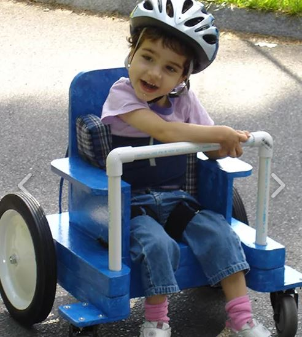
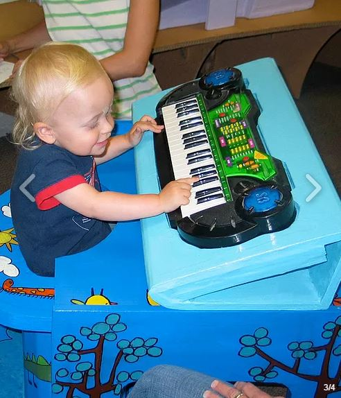
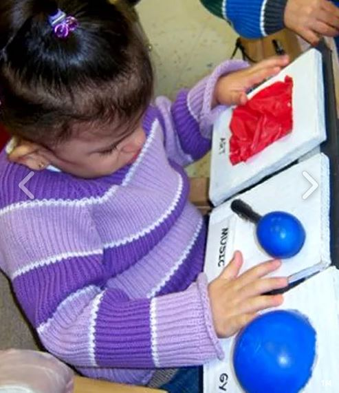
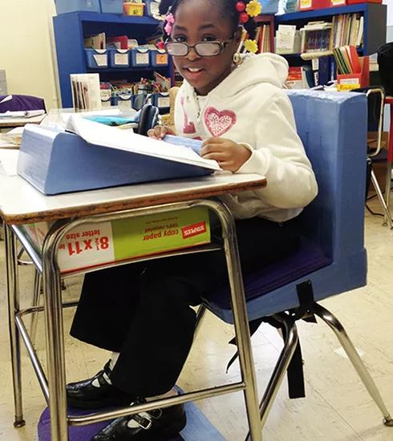

Movelaria de Papelão
Oficina de construção de objetos acessíveis e adaptados a partir de materiais de baixo custo.

Quem sou eu?
— Humanas?
— Midialogia
— Mídia Independente
— Madrid
— Nova Iorque
— Mestrado
— E agora?
E vocês, quem são?
1. Introdução
De onde vem essa proposta, Gui?

2. Sobre a ADA
Conhecendo quem inspirou essa oficina.
Para a ADA, criar adaptações é uma experiência enriquecedora para todos os envolvidos:
- usuários, que inspiram e se beneficiam;
- sonhadores, que imaginam e solicitam; e
- makers, que projetam e constróem.
Como diretrizes da ADA, cada peça fabricada deve ser:
|
|
3. Papelão
O que é possível fazer com ele?
A ADA é pioneira no uso do papelão como principal matéria-prima de suas fabricações. Com técnicas simples, o material adquire surpreendente resistência e pode se transformar em complexos dispositivos.








4. Conhecimento Aberto
Aprendendo como a ADA ensina.
A ADA está aberta a compartilhar seu conhecimento com pessoas interessadas, tais como: estudantes, professores, pais, designers e terapeutas.
A fim de que esse movimento continue em expansão, a Associação adota uma postura não-proprietária em relação a seus produtos, técnicas e designs.
"So please Take, Build, Improve, and Expand upon the things you see here - but understand not only what you are doing - but for whom - and do so safely and collaboratively with others."(ADA, Learning Library)
4.1. Curso Presencial
O curso completo oferecido pela ADA possui duração de 3 dias e é estruturado da seguinte maneira:
- O básico do papelão no Design Adaptativo.
- Fazendo equipamento adaptativo funcionar.
- Dispositivos adaptativos feitos para servir.
O valor da taxa de inscrição para cada dia é cobrado separadamente e inclui os custos com materiais.
| Dia | Duração | Preço |
|---|---|---|
| 1 | 6 horas | US$225 |
| 2 | 6 horas | US$225 |
| 3 | 6 horas | US$150 |
4.2. Biblioteca de Videoaulas
5. Técnicas
O conjunto de habilidades desenvolvidas.
A Biblioteca de Videoaulas agrupa as técnicas necessárias nas 9 categorias seguintes:
| 1. Papelão | |
|---|---|
| 1.1. | A força e resistência da fibra do papelão |
| 1.2. | Camadas triplas usando cola branca |
| 1.3. | Camadas em direção única ou cruzada |
| 1.4. | Camadas triplas a partir de papelão caseiro |
| 2. Medição | |
|---|---|
| 2.1. | Medindo com uma régua em T |
| 2.2. | Medindo com uma fita métrica |
| 2.3. | Medindo com um transferidor |
| 3. Corte | |
|---|---|
| 3.1. | Cortando com estilete |
| 3.2. | Cortando com faca caseira |
| 3.3. | Cortando com serra tico-tico |
| 3.4. | Cortando com serra de fita |
| 4. Dobra | |
|---|---|
| 4.1. | Dobrando papelão de parede única |
| 4.2. | Dobrando papelão de parede tripla I |
| 4.2. | Dobrando papelão de parede tripla II |
| 5. Montagem | |
|---|---|
| 5.1. | Adicionando suporte interno |
| 5.2. | Removendo camadas de papelão |
| 5.3. | Montando com cola quente |
| 5.4. | Montando com cola quente e cola branca |
| 6. Reforço | |
|---|---|
| 6.1. | Criando pregos com palitos de churrasco |
| 6.2. | Criando pregos a partir de tiras de madeira |
| 6.3. | Adicionando pregos ao papelão |
| 6.4. | Adicionando palitos de churrasco ao papelão |
| 7. Aresta | |
|---|---|
| 7.1. | Rasgando papéis para arestas |
| 7.2. | Suavizando arestas com tiras de papel |
| 7.3. | Suavizando arestas com papel para embrulho |
| 7.4. | Suavizando arestas com fita adesiva |
| 8. Acabamento | |
|---|---|
| 8.1. | Fazendo o acabamento com lixas |
| 8.2. | Acabamento com massa de vidraceiro |
| 8.3. | Utilizando o martelo para suavizar arestas |
| 9. Decoração | |
|---|---|
| 9.1. | Preparando para pintura com primer |
| 9.2. | Pintando com tinta a base de água |
| 9.3. | Decorando com tinta a base de água |
| 9.4. | Finalizando com poliuretano a base de água |
6. Discussões
Aprofundando para além da prática.
Uma oficina de Movelaria de Papelão voltada para acessibilidade requer conversas sobre diversos aspectos, tanto práticos como teóricos.
Sobre a escolha do papelão
- Podemos confiar em papelão para móveis?
- Há alguma ciência por trás disso tudo?
- Por que não a madeira, o compensado, etc?
Possibilidades e Limitações
- Móveis comerciais usam papelão?
- Para quais casos o papelão é indicado?
- O que é melhor não fabricar de papelão?
Encontrando matéria-prima
- Como e onde posso encontrar papelão?
- Quanto papelão é preciso conseguir?
- Como identificar os melhores materiais?
Human Centered Design (HCD)
- Como avaliar a necessidade de cada pessoa?
- Criando para alguém versus criando com alguém.
- Quais cuidados especiais devemos tomar?
Técnicas de Design Thinking
- O trajeto desde uma necessidade para uma ideia.
- A solução perfeita é aquela que podemos criar.
- O valor do teste sobre todas as outras etapas.
Comunidades de mão dupla
- Onde buscar apoio para a solução de problemas?
- Inspirando-se em projetos, experiências e saberes.
- Como devolver nosso conhecimento ao mundo?
7. Planejamento
O que faremos? Como?
Construcionismo
Construção do conhecimento baseada na realização de uma ação concreta que resulta em um produto palpável

Seymour Papert
Diretrizes
#1 Final Aberto
- Cada um produz o que quer.
- Suas produções dependem de suas ideias.
- Suas ideias dependem de referências.
#2 Instrutor
- Monitoria e direcionamento.
- Sugestões, auxílio com dúvidas.
- Pesquisa conjunta e parceria.
8. Movelaria
Manifesto da oficina
Somos a Movelaria, um coletivo recém-formado com o objetivo de construir mobiliários acessíveis.
Cada um de nós possui experiências em áreas de atuação diferentes. Nós nos complementamos.
Por isso, estamos aqui para experimentar, tentar, errar e acertar. Sobretudo, nosso objetivo é aprender.
Já conquistamos um horário comum, um laboratório e vários materiais para trabalharmos juntos.
Nosso desafio agora é transformar nossas ideias em objetos concretos.
Encontro #1
Iniciando os projetos
Possibilidades
Apenas ideias iniciais.
Encontro #2
E hoje, o que faremos?


Ótimos resultados!
Parabéns a todos pelo empenho e trabalho em equipe.

Alguém tem algo a dizer?
Processo
- Escolha do móvel
- Planejamento
- Medição e corte
- Colagem
- Estrutura
- Reforço
- Acabamento
Técnicas


Simbora para a prática?
Precisando reassistir a qualquer vídeo, é só falar!
Encontro #3
Passamos da metade!


Mais uma vez,
parabéns a todos pelo empenho!
E mais:
- Arte em E.V.A de José!
- Arte em M.D.F de Rita!
- Objetos de Dadá!
Alguém tem algo a dizer?
Processo
- Escolha do móvel
- Planejamento
- Medição e corte
- Colagem
- Estrutura
- Reforço
- Acabamento
Técnicas


Simbora para a prática?
Precisando reassistir a qualquer vídeo, é só falar!
Encontro #4
Todo fim é um novo começo!


Muito legal!
Estamos de parabéns.
E mais...


Alguém tem algo a dizer?
Os móveis serão nossos...
...se a gente garantir que vai usá-los!
Processo
- Escolha do móvel
- Planejamento
- Medição e corte
- Colagem
- Estrutura
- Reforço
- Acabamento
Técnicas

Simbora trabaiá?
O que fizermos, tá feito!
Obrigado!
gob.bueno@gmail.com